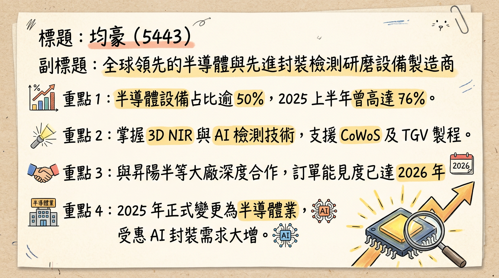
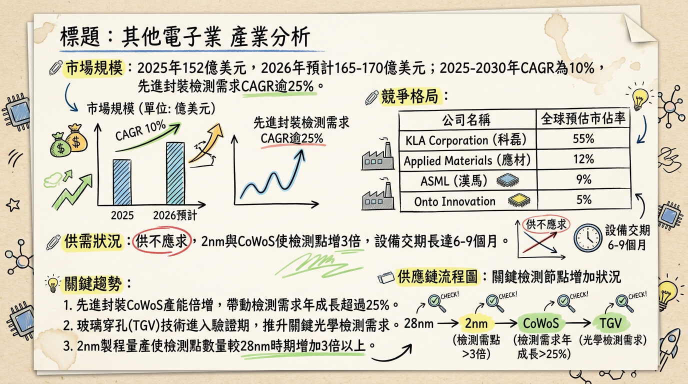
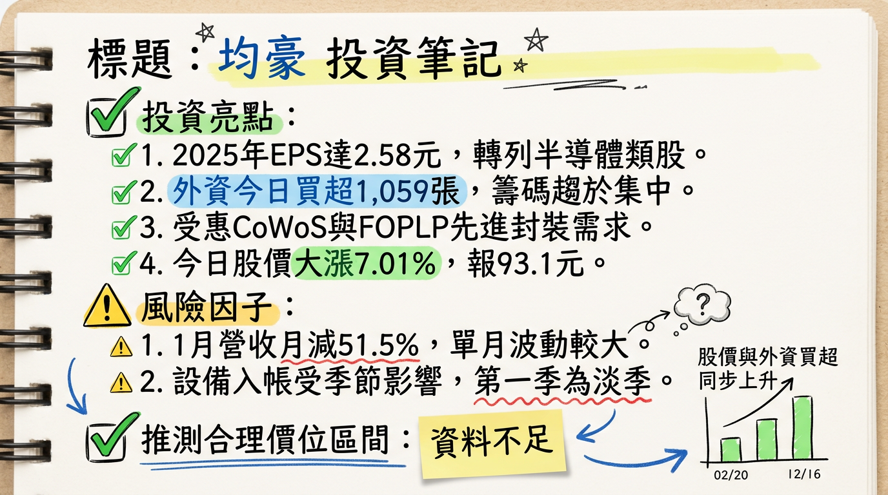

5443 均豪 深度研究報告：半導體轉型收割期，2nm 與先進封裝推升成長新高度
日期：2026 年 03 月 05 日
## 一句話摘要
均豪（5443）成功由面板設備轉型為半導體「檢、量、磨、拋」設備大廠，受惠 2 奈米製程及先進封裝（CoWoS/FOPLP）需求爆發，2026 年獲利有望續創歷史新高。
## 公司概覽
均豪精密工業（GPM）過去以面板設備為主，自 2025 年 6 月正式變更業態為「半導體類股」。公司目前專注於先進封裝檢測、再生晶圓研磨（CMP）及 AI 自動光學檢測。
【2025 年營收結構表格】
| 業務類別 | 營收佔比 | 核心產品 |
|---|
| 半導體設備 | 50% - 60% | 研磨設備 (Strip Grinder)、CMP 設備、3D NIR 檢測、Carrier Inspection |
| 面板/顯示器設備 | 30% - 40% | Micro LED 設備、新一代 LTPS 面板設備 |
| 其他（智動化系統等） | 5% - 10% | 智能倉儲、自動化搬運系統 |
## 核心競爭優勢
「檢、量、磨、拋」一體化技術： 具備研磨減薄與高精度光學檢測雙重技術，為台廠少數能提供 CMP 研磨至 3D 檢測一站式方案的廠商。
G2C+ 策略聯盟： 與志聖 (2467)、均華 (6640) 組成聯盟，共享研發與製造資源，具備強大的「整線輸出」能力。
2 奈米先行者： 與再生晶圓龍頭（如昇陽半）深度綁定，CMP 設備已打入 2 奈米供應鏈，訂單能見度直達 2026 年底。
在地化全球服務： 隨台積電佈局，於熊本、德勒斯登、亞利桑那設有服務據點，強化與大客戶的黏著度。
## 財務分析
【月營收趨勢表格（最近 6 個月）】
| 月份 | 營收（百萬元） | 月增率 MoM | 年增率 YoY | 狀態備註 |
|---|
| 2026/01 | 269.44 | -51.47% | -5.41% | 傳統淡季與 12 月高基期影響 |
| 2025/12 | 555.16 | +50.14% | +1.30% | 創 24 個月新高 |
| 2025/11 | 369.75 | +16.69% | -23.66% | 入帳週期波動 |
| 2025/10 | 316.87 | -25.78% | -33.06% | |
| 2025/09 | 426.94 | -21.24% | +69.13% | |
| 2025/08 | 542.05 | +71.99% | +30.44% | 2025 年營收次高 |
- 2024 (實際)： 1.61 元
- 2025 (實際)： 2.58 元 (創 19 年新高，淨利 4.15 億元)
- 2026 (法人預估)： 3.2 - 3.8 元
## 法說會重點（2026/03/03 最新內容）
營收 guidance： 半導體營收佔比目標在 2026 年底穩定達到 60% 以上。
CMP 設備： 訂單能見度極佳，受惠於 2 奈米製程及再生晶圓需求，產線維持高效率自動化組裝。
先進封裝 (CoWoS/FOPLP)： 配合子公司均華出貨 OSAT 大廠，檢測設備隨客戶擴產持續追加訂單。
管理層發言： 董事長陳政興強調「未來十年是設備業黃金十年」，2026 年將是 FOPLP（面板級封裝）接手產能缺口的關鍵年。
## 券商觀點
【券商目標價表格】
| 券商名稱 | 評等 | 目標價 | 2026 EPS 預估 | 報告日期 |
|---|
| 統一證券 | 買進 (Buy) | 120 元 | 3.15 元 | 2026/01/06 |
| 元大證券 | 看多 (Positive) | 115 元 | 3.42 元 | 2026/03/03 |
| CMoney研究員 | 強力買進 (Strong Buy) | N/A | 3.30 元 | 2026/01/05 |
## 財報深度分析
【2025 年度利潤率趨勢表格】
| 項目 | 2025 Q1 | 2025 Q2 | 2025 Q3 | 2025 Q4 |
|---|
| 毛利率 | 37.81% | 36.31% | 34.11% | 32.99% |
| 營業利益率 | 11.64% | 10.54% | 7.54% | 11.97% |
| 稅後淨利率 | 10.66% | 15.44% | 7.41% | 11.19% |
- 存貨分析： 2025 Q4 存貨週轉天數約 94.12 天，較年初 169 天大幅改善，顯示銷貨速度加快。
- 資本支出： 2025 全年投入約 1.5 - 2 億元 於 2 奈米檢測技術與 AI 數位雙生研發。
## 股權異動與資本結構
信託申報： 2026/01/14 董事長陳政興（115 張）及執行長梁又文（135 張）申報信託，主要用於員工權利新股管理。
庫藏股轉讓： 2026/02/26 董事會決議轉讓 113 年買回之庫藏股予員工，強化人才留用。
股利政策： 2025 年度擬配發 2.2 元現金股利，為近年高點。
## 產業分析
【全球半導體檢測設備競爭格局】
| 排名 | 公司名稱 | 核心領域 | 市佔/地位 |
|---|
| 1 | KLA (美) | 前段瑕疵檢測、量測 | 55% (全球領導者) |
| 2 | AMAT (美) | 電子束檢測、CMP | 12% |
| - | 均豪 (5443) | CMP、3D NIR、AOI | 國產化領先者，價格具 20-30% 優勢 |
- 市場規模： 預計 2026 年全球量測檢測市場達 165-170 億美元，先進封裝需求成長率 >25%。
## 近期催化劑
1. 法說會後法人大舉買超（2026/03/05 外資買超 1,059 張）。
2. 切入 SpaceX 供應鏈，提供 700mm FOPLP 製程設備。
3. 3D NIR 檢測設備完成 2 奈米製程驗證。
1. 1 月營收月減幅劇烈（-51.5%），短線影響投資情緒。
2. 對單一晶圓大廠資本支出依賴度高。
## ⭐ 成長動能時間軸
- 2025 Q4： 完成中科廠產能升級，應對 CMP 訂單增量。
- 2026 Q1： 2025 全年獲利結算（EPS 2.58），股價進入獲利校準期。
- 2026 Q2： 高階 3D NIR 檢測設備 正式量產，切入 TGV（玻璃穿孔）技術市場。
- 2026 Q3： 2 奈米製程再生晶圓 CMP 設備進入交貨高峰。
- 2026 Q4： 海外據點（德、美、日）服務營收佔比預計翻倍成長。
## 2026 展望：成長動能 vs 風險
- 成長動能： 半導體純度大幅提升，2 奈米設備將帶動毛利率重回 35% 以上。FOPLP 玻璃基板技術商業化將是下半年的主要看點。
- 風險： 全球半導體擴產若因地緣政治延後，或玻璃基板技術普及速度不如預期，將影響成長斜率。
## 投資結論
獲利上修： 均豪已展現強大轉型獲利能力，2025 EPS 2.58 元創高，2026 年有望挑戰 3.5 元。
評價調升： 市場已將其評價模型由「面板設備（10-12x P/E）」轉為「半導體設備（25-30x P/E）」。
目標價區間建議： 參考法人觀點，建議區間 90 - 120 元。目前（03/05）股價 93.1 元仍處於合理偏低區間。
操作建議： 趁 1-2 月營收淡季波動分批佈局，迎接 Q2 後 2 奈米與先進封裝設備的入帳高峰。
本報告由 AI 自動產生，資料來源為公開網路資訊，僅供參考，不構成投資建議。
產生時間：2026-03-05 12:05
📊 資訊卡


